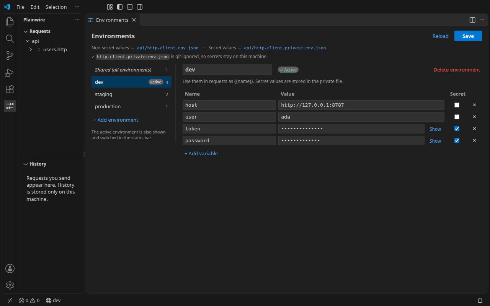

Environments for .http files: http-client.env.json and http-client.private.env.json
An environment is a named set of variables, such as dev, staging or production. You write {{host}} in a request once, and the selected environment decides what it becomes. In .http files, environments live in two JSON files next to your requests: http-client.env.json for values you can commit, and http-client.private.env.json for tokens and passwords that stay on your machine. Plainwire reads both in VS Code, Cursor and VSCodium, and in its command-line runner for CI.

http-client.private.env.json.The two files
http-client.env.json has one object per environment. Commit it: it holds what every teammate needs and nothing secret.
{
"$shared": {
"apiVersion": "v1"
},
"dev": {
"host": "http://localhost:3000",
"user": "ada@example.com"
},
"staging": {
"host": "https://staging.example.com",
"user": "qa@example.com"
}
}
http-client.private.env.json has the same shape, for secrets. Its values are added to the environment of the same name, and a value in the private file overrides the same name in the public one. Keep it out of git.
{
"dev": {
"token": "dev-secret-123"
},
"staging": {
"token": "staging-secret-456"
}
}
$shared holds values for every environment. The selected environment is laid over it, so an environment’s own host wins over a shared host. A value can also refer to a shared one with {{$shared apiVersion}}. With no environment selected, only $shared applies.
Plainwire reads every http-client.env.json and http-client.private.env.json in the workspace (except under node_modules) and reloads them when they change. The editor checks the keys as you type them, using a JSON schema that comes with the extension. Values that are not strings, such as an OAuth 2 "Security": { "Auth": … } object, are merged key by key, so the private file can add a Client Secret to a configuration from the public file (see OAuth 2.0 tokens in .http files).
Using variables in requests
Write the variable name in double curly braces anywhere in the URL, a header or the body:
@pageSize = 20
### List users
# @assert status == 200
GET {{host}}/{{apiVersion}}/users?limit={{pageSize}}
Authorization: Bearer {{token}}
@pageSize = 20 is a file variable: it is defined in the .http file itself and is the same in every environment. host, apiVersion and token come from the environment. A file variable can use an environment variable, for example @baseUrl = {{host}}/v1.
When the same name is defined in several places, the first match in this list wins:
- Variables set with
request.variables.set()in this request’s pre-request script. - File variables (
@name = value). If the name is defined twice, the later line wins. - The selected environment:
http-client.private.env.jsonoverhttp-client.env.json, both over the VS Code settings described below, and the environment over$shared. - Values saved with
client.global.set()by earlier scripts.
Names that start with $ are system variables. Two of them read secrets from outside the JSON files:
{{$dotenv API_TOKEN}}readsAPI_TOKENfrom a.envfile. Plainwire looks next to the.httpfile first, then at the root of the workspace folder (in the CLI: the directory you run it from).{{$processEnv API_TOKEN}}reads an environment variable of the editor or CLI process.{{$processEnv %tokenVar}}takes the name of that variable from the environment’stokenVar.
Both work inside environment files too: "token": "{{$dotenv API_TOKEN}}" in the private file keeps the actual value in .env. The full list of system variables is in the .http syntax cheat sheet.
Selecting an environment
- Status bar: the globe item at the bottom shows the selected environment, or No environment. Click it (or run Plainwire: Select Environment) to pick one. The list shows how many variables each environment has, and offers Create http-client.env.json… when there is none yet and Edit environments….
- Request editor: the Env: link next to the request shows the same choice and opens the same list.
- Environment editor: Use this environment at the top of an environment’s tab selects it. The tab then shows Active. A new or renamed environment has to be saved first.
- From the error (new in 0.15): if you send a request while no environment, or the wrong one, is selected, the error says where the variable is defined:
Variable {{host}} is not defined. It is defined in environment "dev" and "staging", but no environment is selected.Below it are buttons such as Use dev and send and Use staging and send, which select that environment and send the request again, and an Edit environments… link.
The choice is saved per workspace and applies to every request, Run all, and Copy as cURL.
Editing environments in a form
Plainwire: Edit Environments… (also in the status bar list) opens the files as a form: one tab per environment, plus Shared (all environments) for $shared. Each variable has a name, a value and a Secret box.
- Values with Secret ticked are saved to
http-client.private.env.json, the others tohttp-client.env.json. Secret values are masked until you click Show. - Values that are not strings (objects, arrays, numbers) are shown read-only with an Open JSON link, and are written back unchanged. So are
$schemaand the order of your keys. A file with no changes is not rewritten. - With environment files in several folders, pick the folder at the top of the editor.
- If the files change on disk while you edit, the editor asks whether to reload or to keep your changes.
Keeping secrets out of git
Add http-client.private.env.json to .gitignore. The environment editor checks this for you:
- If a
.gitignorealready covers the file, it says so: the file is git-ignored, so secrets stay on this machine. - If not, it shows a warning with an Add to .gitignore button. The button appends these lines to the
.gitignoreat the root of the workspace folder:# Secrets for .http requests (Plainwire / JetBrains HTTP Client / REST Client) http-client.private.env.json
- In a git repository that has no
.gitignoreyet (new in 0.15), the same button creates one, becausegit add .would otherwise commit the secrets.
A .gitignore in a subfolder that covers the file counts too. For teammates, commit a http-client.env.json with every non-secret value, and tell them which secret names to put in their own private file.
The same files in the CLI and CI
The Plainwire CLI reads the same files. It looks for them under the directory you run it from:
plainwire run api/ --env staging plainwire run api/ --env ci --env-file ci.env.json plainwire run api/ --env staging --var token=$API_TOKEN
--env <name>(or-e) selects the environment. Without it, only$sharedapplies.--env-file <file>adds another file in the same format, read after the private file, so its values win. Repeat it for several files. This is a convenient way to write a CI secret to a file and use it.--var name=valuereplaces one environment value. Repeat it as needed.- Secrets from your CI’s secret store can also be read with
{{$processEnv NAME}}.
Run without --env, a request that needs {{host}} fails with the same hint as in the editor. These are real runs (20 November 2026) of the 0.15.0 CLI, with the files above in the working directory. The only differences: dev’s host pointed at a local echo server, and the request had a second check that the server received Bearer dev-secret-123.
$ plainwire run api/
plainwire 0.15.0 · 1 request in 1 file · no environment (available: dev, staging)
api/users.http
✗ GET List users
Variable {{host}} is not defined. It is defined in environment "dev" and "staging", but no environment is selected. Run with --env dev.
at api/users.http:6
0 passed, 0 failed, 1 errors (1 requests, 3 ms)
With --env dev, the first line names the files it read, and the request sends the token from the private file:
$ plainwire run api/ --env dev plainwire 0.15.0 · 1 request in 1 file · environment dev from http-client.env.json, http-client.private.env.json api/users.http ✓ GET List users 200 · 19 ms · 2/2 checks 1 passed, 0 failed (1 requests, 25 ms)
An unknown name stops the run with exit code 2 and lists the environments it found, for example Environment "nope" not found. Available: dev, staging. In the GitHub Action, set env: staging.
Compatibility with JetBrains and REST Client
- JetBrains HTTP Client (IntelliJ IDEA, WebStorm and others) uses the same two file names, the same layout, and the same rule that private values override public ones. A team can use both editors on one set of files.
- REST Client keeps environments in the
rest-client.environmentVariablessetting, usually in.vscode/settings.json. Plainwire reads that setting too, in the extension and in the CLI, so you can keep it. Plainwire’s ownplainwire.environmentVariablessetting uses the same format. When a setting and a file define the same environment variable, the file wins. - The
$sharedenvironment works as in REST Client: it applies in every environment, and the selected one wins. - Postman and Thunder Client environments become
http-client.env.jsonwhen you import a collection.
FAQ
Where do I put the files?
Anywhere in the workspace; next to your .http files is usual. Plainwire reads every pair it finds and merges them, so give each environment a distinct name if you have files in several folders.
Why is {{host}} not defined?
Usually because no environment is selected. Check the status bar, or use the Use dev and send button on the error. If the error has no such hint, no environment defines the name: check the spelling, or add it in the environment editor.
Does it work in Cursor, Windsurf and VSCodium?
Yes, it is the same extension. Install the .vsix from the latest release; see installing in Cursor and VSCodium.
Are my secrets sent anywhere?
No. They are read from files on your machine and sent only in the requests you write. There is no account and no telemetry; the source is on GitHub (MIT).